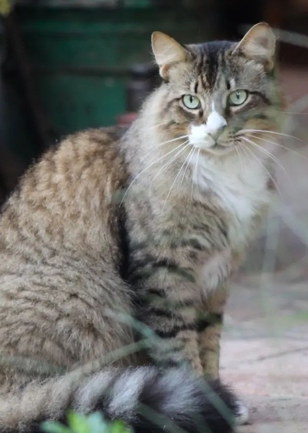

Mi gato Príncipe
Mi gato Príncipe, es un felino impresionante, peludo, grande y fuerte, siempre mostrando su naturaleza cazadora. Su habilidad para atrapar serpientes, ratones y hasta murciélagos es prueba de su valentía y agilidad. Cada vez que lo veo regresar de sus aventuras, me asombra su instinto protector y su capacidad para enfrentarse a cualquier desafío, demostrando que es un verdadero guardián en casa. Su presencia poderosa me llena de orgullo, y verlo en acción es un recordatorio de su naturaleza feroz y decidida.
Ahora tiene ya 5 años en mi familia y es amado por todos. Fue un compañero cuando estudiaba lejos de casa y lo quiero mucho por eso, lo adoptamos porque la persona que lo encontró en la calle no podía quedarselo, y me alegra que nos lo diera porque es muy feliz ahora. un recuerdo muy preente que tengo es la vez que vió mariposas por primera vez. Resulta que en la zona de Tehuacán donde viviamos no había mucha naturaleza y por lo tanto no había mariposas pero cuando lo lleve a Oaxaca y lo dejé en el patio, observó a las mariposas de una manera muy peculiar y trataba de atraparlas.
Los gatos
Los gatos son criaturas fascinantes y enigmáticas que han cautivado a la humanidad durante milenios. Con su gracia y agilidad, estos animales son expertos cazadores, capaces de moverse en silencio y precisión. Su independencia y personalidad única los hacen compañeros intrigantes, a menudo oscilando entre momentos de ternura y travesuras juguetonas. Además, su ronroneo tiene un efecto calmante, proporcionando consuelo y relajación a quienes los rodean. En muchas culturas, los gatos son símbolo de buena suerte y protección, reflejando su lugar especial en el corazón de las personas.
Fotografía de flores
La fotografía de flores es una forma de arte que captura la delicadeza, belleza y diversidad de la naturaleza en su máxima expresión. A través de esta disciplina, los fotógrafos buscan inmortalizar los detalles más sutiles, como la textura de los pétalos, los vibrantes colores y las formas únicas que cada flor ofrece. Además de ser estéticamente atractiva, la fotografía de flores también invita a la contemplación, mostrando el ciclo de vida de las plantas y su relación con el entorno. Con la correcta iluminación, enfoque y composición, cada imagen puede transmitir emociones, destacar patrones naturales y resaltar la compleja simplicidad de estas maravillas botánicas. Desde siempre me ha gustado tomar fotos a las flores, los musgos, los atardeceres, fotos macro, en sí a la naturaleza, pero no soy muy buena tomando fotografías a las personas.
El atardecer
Los atardeceres son esos momentos mágicos del día que nunca dejan de asombrarnos. Cuando el sol empieza a bajar, el cielo se pinta de colores que van desde el naranja intenso hasta el rosa suave, creando un espectáculo visual que parece sacado de una película. No hay nada como sentarse en la playa o en un parque, con una bebida fría en la mano, mientras se observa cómo la luz va cambiando y el mundo parece calmarse por un instante. Es como si la naturaleza nos regalara un recordatorio diario de lo hermosa que puede ser la vida.
Los atardeceres morados son un fenómeno que transforma el cielo en una obra de arte en constante cambio, donde matices de lavanda, violeta y púrpura se entrelazan en una danza visual. Este espectáculo ocurre cuando la luz del sol se filtra a través de la atmósfera, creando una paleta de colores que evoca sensaciones de calma y serenidad. Al observar un atardecer morado, es fácil perderse en la belleza del momento, sintiendo cómo el mundo se detiene por un instante. Ya sea en la cima de una colina, en la orilla de una playa o simplemente desde la ventana de casa, estos atardeceres nos invitan a reflexionar, a soñar y a apreciar la magia que la naturaleza tiene para ofrecernos.
Además, los atardeceres son perfectos para compartir con amigos o seres queridos. Ya sea en una cena al aire libre, una caminata o simplemente disfrutando de un rato juntos, el ambiente se vuelve especial. La conversación fluye, las risas resuenan y cada rayo de sol que se oculta parece llevarse consigo un poco de nuestras preocupaciones. En esos momentos, todo parece posible, y es fácil dejarse llevar por la belleza del momento, creando recuerdos que atesoraremos por siempre.
Me encantan los de octubre que son de tonos azules y morados, me parecen muy nostálgicos y a la vez hermosos.
Tacos
Los tacos son una de las joyas gastronómicas más representativas de México, conocidos por su versatilidad y sabor incomparable. Se componen de una tortilla, generalmente de maíz o harina, que envuelve una variedad de ingredientes como carne, pollo, pescado, frijoles, verduras, salsas, y guarniciones frescas como cilantro y cebolla. Cada región en México tiene su propia versión de tacos, desde los tacos al pastor hasta los de barbacoa o carnitas, cada uno con su toque especial. Además de ser deliciosos, los tacos representan una parte importante de la cultura y la convivencia social, ya que se disfrutan en cualquier momento del día y en casi cualquier lugar. Mis favoritos son los de al pastor, con una salsita verde. Da clic en el icono de abajo para conocer las 10 curiosidades que no sabías de los tacos
Flor con filtro
Los filtros para fotografías son herramientas fantásticas que permiten a los fotógrafos añadir un toque especial y personal a sus imágenes. Desde filtros de color que pueden intensificar los tonos y crear un ambiente único, hasta filtros de densidad neutra que ayudan a controlar la luz y lograr efectos de larga exposición, la variedad es enorme. Usar filtros es como tener una paleta de pintura en la que puedes experimentar y jugar con la atmósfera de cada toma. Además, hoy en día no solo existen filtros físicos que se colocan en la lente, sino también filtros digitales que se aplican en la edición, lo que significa que puedes transformar tus fotos en un abrir y cerrar de ojos. En resumen, los filtros son una excelente manera de expresar tu estilo y creatividad en cada captura.
Como mencioné antes, me encanta tomar fotografías a las flores desde que tenía 12. Aquí te presento una con distintos filtros aplicados.